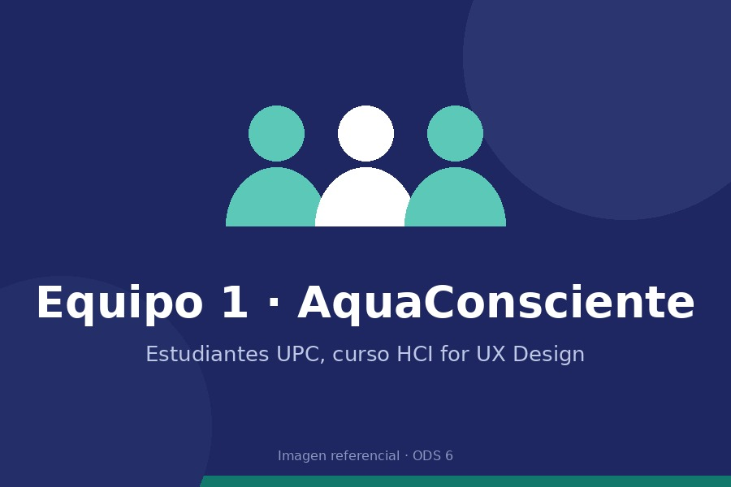
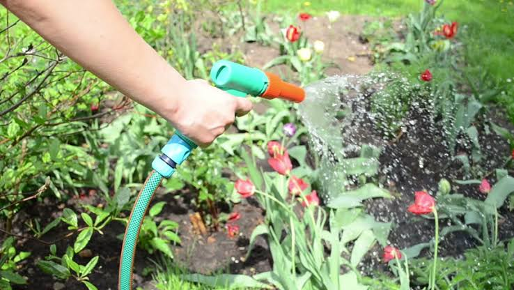
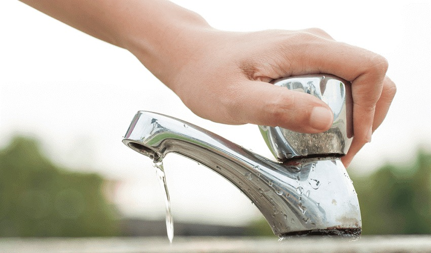

Nuestra misión
Ayudar a las personas a notar cuánta agua usan en el momento en que la usan, para sostener sus buenos hábitos.
ODS 6 · Agua limpia y saneamiento
Muchos jóvenes ya ahorran agua, pero se enteran de un corte programado cuando ya es tarde. AquaConsciente te avisa con anticipación y te dice cuántos litros guardar para tu hogar.
Probar mi alerta de corte
Somos el Equipo 1, estudiantes de la Universidad Peruana de Ciencias Aplicadas (UPC) que promovemos iniciativas del ODS 6 a partir de entrevistas con jóvenes sobre cómo usan y ahorran el agua.
Ayudar a las personas a notar cuánta agua usan en el momento en que la usan, para sostener sus buenos hábitos.
Ser una herramienta de referencia para que los hogares peruanos cuiden el agua de forma constante, coordinada y anticipada.
Tres servicios para quienes ya cuidan el agua y necesitan una ayuda concreta para sostener ese hábito.
HU-01
Muestra los litros y minutos usados mientras realizas una actividad, como lavar los platos, y avisa si el caño lleva demasiado tiempo abierto.
HU-02
Registra tu zona y las personas que viven en casa para calcular recomendaciones personalizadas y compartir la meta de ahorro.
HU-03
Te avisa con anticipación de un corte programado en tu zona e incluye cuánta agua conviene almacenar.
Elige tu distrito y mira el aviso que recibirías. Es una simulación con datos de ejemplo.
Los datos de Santiago de Surco vienen de nuestros mockups; los de San Borja y La Molina son ficticios.
Nacen de lo que encontramos en nuestras entrevistas con usuarios.
Los entrevistados acortaron la ducha, donde el tiempo se ve, pero dejan el caño abierto al lavar los platos. Ofrece una señal en tiempo real.
Muchas decisiones sobre el agua se toman en familia. Permite fijar una meta compartida y ver el aporte de cada integrante.
Guardar agua suele ocurrir solo después de un corte. Busca que las personas se anticipen con avisos y recomendaciones.
Pantallas de AquaConsciente tal como las diseñamos en Figma.


Lo que dirían usuarios jóvenes sobre cómo AquaConsciente les ayuda a cuidar el agua.
«Ya me bañaba más rápido, pero el caño abierto al lavar los platos me ganaba. Con el monitoreo en vivo veo los litros mientras lavo y me acuerdo de cerrarlo.»
«En mi casa somos 3. Ahora la aplicación me avisa dos días antes del corte y me dice cuántos litros guardar: 18 en total.»
«El servicio en mi zona es irregular. Con la alerta sé el horario exacto y me preparo en lugar de correr a llenar baldes.»
Testimonios ficticios elaborados con fines académicos (curso HCI for UX Design).
Cuéntanos tu distrito y te explicamos cómo avisarte con anticipación cuando haya un corte de agua programado.
Es una simulación académica: tus datos no se envían ni se guardan.